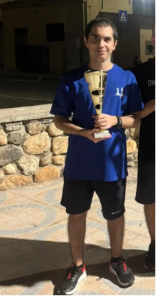
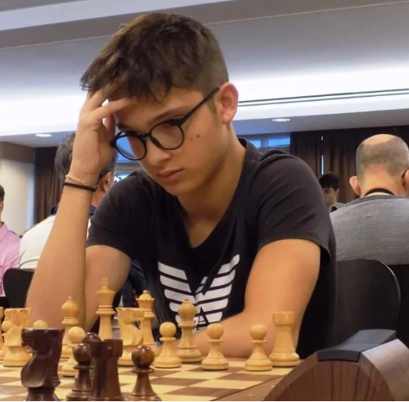

Categoria adulti
♙ Adulti

Alessandro Altea
Alessandro è uno dei pilastri del Red Tal, punto di riferimento tecnico per i giocatori più giovani. Membro dal 2022, capitano della prima squadra, vanta una dedizione al gioco che si unisce a una naturale attitudine all'insegnamento: come istruttore trasmette metodo, pazienza e amore per la scacchiera. Oltre che essere un giocatore esperto, calmo e sempre in controllo della situazione.

Gianluca Mameli
Gianluca unisce al talento scacchistico un ruolo attivo nella vita societaria del Red Tal, di cui è consigliere nel direttivo. E' sempre a disposizione per il circolo e i suoi membri. Campione regionale nel 2022, è tra i giocatori più competitivi della Sardegna. La sua presenza è fondamentale tanto sul piano agonistico quanto su quello organizzativo.

Luca Sonis
Luca vanta una costanza nei tornei ufficiali ne ha forgiato un profilo tecnico completo e maturo. Fratello gemello del Grande Maestro Francesco Sonis, porta con orgoglio l'eredità di una famiglia che ha scritto pagine importanti degli scacchi sardi. Il suo punteggio ELO supera i 2000, traguardo significativo che lo pone stabilmente tra i candidati maestri più solidi della regione.

Germano Mascia
Germano è una delle figure giovanili più importanti del Red Tal, da poco 18enne, Germano fin da piccolo si è distinto grazie alle sue qualità tecniche invidiabili. E' un giocatore completo, capace di adattarsi a qualsiasi avversario e situazione. Il suo ELO supera i 2000 punti, traguardo che testimonia la sua crescita costante e il suo talento naturale. Con un futuro promettente davanti a sé, è destinato a diventare uno dei protagonisti assoluti degli scacchi sardi nei prossimi anni.

Daniele Spiga
Daniele guida il circolo Red Tal ormai da 4 anni. Sotto la sua presidenza il circolo ha consolidato la propria presenza nel panorama scacchistico sardo, organizzando tornei di rilevanza regionale e ampliando il numero di tesserati. Il suo impegno va ben oltre la gestione amministrativa: è lui il primo a credere nel potenziale di ogni giocatore, dai principianti ai campioni.

Leopoldo Pannella
Leopoldo è l'istruttore storico del Red Tal e figura di riferimento per l'attività didattica del circolo. Con metodo e passione ha sempre seguito i più piccoli, trasmettendo i fondamentali del gioco con la capacità di rendere ogni lezione coinvolgente. E' grazie al suo lavoro se ora i nostri giovani giocatori hanno ottenuto risultati eccellenti nelle competizioni regionali e nazionali.

Mattia Corrias
Mattia è consigliere del direttivo e contribuisce attivamente alla vita del circolo con idee fresche e spirito collaborativo. Il suo coinvolgimento spazia dall'organizzazione degli eventi alla comunicazione sui social, aiutando il Red Tal a raggiungere un pubblico sempre più ampio. Un volto giovane e dinamico nella governance del circolo.